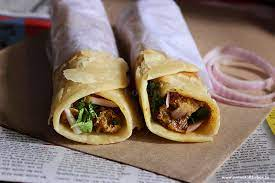
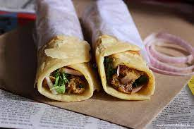

A Chicken Roll is a flavorful and convenient handheld delight that features tender chicken pieces wrapped in a soft flatbread or tortilla, accompanied by a range of delicious fillings and condiments. This popular street food item offers a perfect balance of flavors and textures, making it a go-to choice for those seeking a quick and tasty meal. The chicken is typically marinated in a blend of spices and herbs, then grilled, roasted, or pan-fried to perfection. It is then placed on a flatbread or tortilla, which acts as a wrap to encase the chicken and other fillings. The fillings can vary, including lettuce, tomato, onions, cucumbers, cheese, and a range of sauces such as mayonnaise, garlic sauce, or hot sauce. These ingredients add freshness, crunch, and a burst of flavors that complement the savory chicken. The Chicken Roll is versatile and can be customized to suit personal preferences, with options for additional ingredients like pickles, bell peppers, or even a drizzle of tangy yogurt sauce. Whether enjoyed as a quick snack, a light lunch, or a satisfying on-the-go meal, the Chicken Roll offers a convenient and mouthwatering option that satisfies cravings and leaves taste buds delighted.